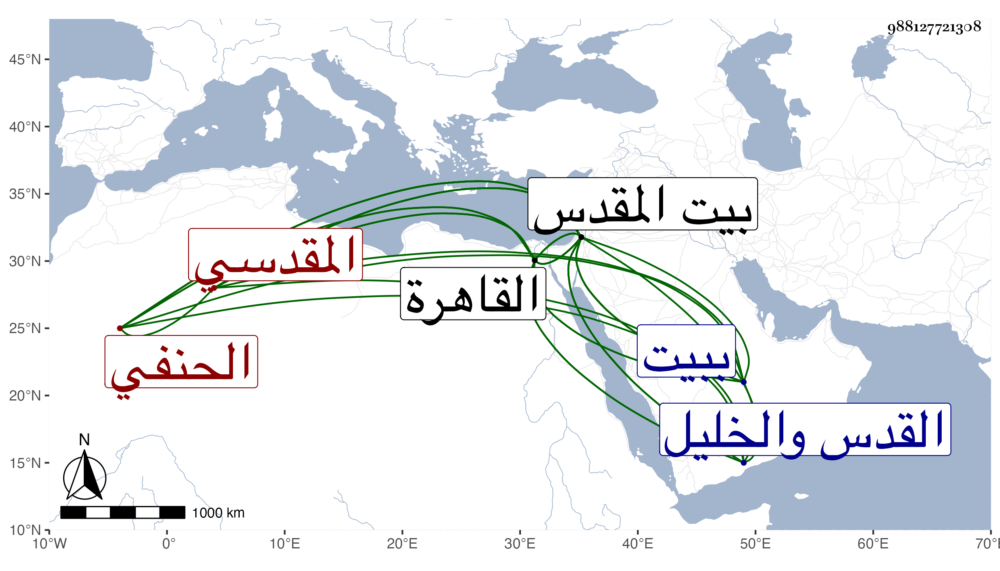

0902Sakhawi.DawLamic.ITO20230111-ara1.EIS1600.988127721308
Biography ID: 988127721308
353
عبد الرحمن بن محمد بن عبد الله بن سعد بن أبي بكر أمين الدين أوزين الدين بن الشمس بن الديري المقدسي الحنفي أخو سعد وإبراهيم الماضيين والآتي أبوهم . ولد في شعبان سنة سبع عشرة وثمانمائة ببيت المقدس وانتقل في صغره سنة تسع عشرة مع أبيه إلى القاهرة فحفظ القرآن والكنز في الفقه والمنار في الأصول والحاجبية في النحو والتلخيص وبحث فيها فأخذ عن أخيه الفقه وأصوله والنحو والمعاني والبيان وعن العز عبد السلام البغدادي الاصول والنحو وعن الابشيطي النحو فقط في آخرين ، وكتب الخط المنسوب وفضل وشارك بل وصف بالبراعة مع نظم ونثر بحيث عد في الأدباء وأثنى شيخنا وغيره على شعره ، وناب عن أخيه في الفضائل بل درس في الفخرية بين السورين برغبة أخيه له عنه ثم رغب هو عنه للشمس الامشاطي وكذا ولي مشيخة المهمندارية بعد الشمس بن الجندي ونظر القدس والخليل والجوالي وغيرها من الوظائف هناك كوظيفة أبيه المعظمية ورام الاستقرار في نظر الاسطبل والجوالي بالقاهرة عوضا عن أخيه البرهان حين رام هو الاستقرار في نظر الجيش فما تهيأ ذلك كله ، وامتحن في سنة اثنتين وخمسين لكونه تخاصم هو ونائب القدس تمراز من بكتمر المؤيدي المصارع وبادر إلى إبراز السلاح فلامه الظاهر جقمق وتغيظ عليه بل وضعه في الحديد بتأليب أبي الخير النحاس ورسم به لسجن أولي الجرائم ولكن ما انفصل عن جامع القلعة حتى خلص وبقي في الترسيم أياما إلى أن ولي ابن محاسن أحد أتباع النحاس ثم بعد أن نكب ابن النحاس أعيد إلى نظر القدس والخليل حتى مات ، وكان قوي الحافظة والذكاء رئيسا فصيحا له ذوق في الأدب وحسن عشرة وشكالة ومكارم وإظهار للتجمل بحيث يكثر الاستدانة بسببه مع طيش وخفة أدت لما حكيته سيما وأمه أم ولد ، زائد الاطراء لنفسه والزهو اجتمعت به في شعبان سنة اثنتين وخمسين وكتبت عنه قوله :
| لا تعجبوا من خاله إذ بدا | وازداد لطف الخد من أجله |
| فكاتب الحسن غدا حاذقا | قد جود النقطة في شكله |
إلى غير ذلك . ومات في ذي الحجة سنة ست وخمسين ببيت المقدس عفا الله عنه ، وللعلاء بن اقبرس حين سعى صاحب الترجمة في كتابة السر بعد الكمال بن البارزي .
| أقول لمن وافى إلى القدس زائرا | وصلت إلى الأقصى من الفضل والخير |
| تقرب إلى مولاك فيه عبادة | وبع بيع الرهاين ... وابعد عن الديرى |
